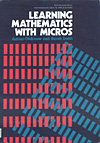
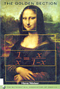
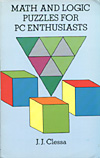
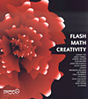

|  |
Learning Mathematics With Micros
Adrian Oldknow
ISBN 0-85312-653-4
(1983)
Common mathematical techniques and numerical analysis
for computer programmers. |
 |
Computers and the Imagination
Clifford A. Pickover
ISBN 0-312-08343-2 (1991)
Varied maths related problems, puzzles, essays and computer
graphics. |
|  |
The Golden Section
Hans Walser
(1993)
ISBN 0-88385-534-8
The mathematics of the Golden Section, with many graphics. |
 |
The Computational Beauty Of Nature
Gary William Flake
ISBN 0-262-56127-1
(1998)
Fractals, chaos, complex systems and adaptation. |
 |
Andrew Glassner's Notebook
Andrew Glassner
ISBN 1-55860 598-3
(1999)
Beautiful book on a range of recreational computer graphics;
2D/3D paper folding, tiling and patterns. |
 |
Byte Size Flash MX
Many authors
ISBN 1-904344-09-7
(2002)
Small programs built in Flash ActionScript. |
|
 |
Mathographics
Robert Dixon
ISBN 0-486-26639-7
(1987)
Computer drawings and their codes; spirals, curves and
surfaces. |
 |
Another Fine Math You've Got Me Into
Ian Stewart
ISBN 0-7167-2341-7
(1992)
Collection of maths ideas and puzzles, including 'tangle'
curves. |
|  |
Math And Logic Puzzles for PC Enthusiasts
J J Clessa
ISBN 0-486-29192-8
(1996)
Collection of short puzzles and number problems, suitable
for solving on a PC. |
 |
The Self Made Tapestry
Philip Ball
(1999)
ISBN 0-19-850243-5
Patterns and forms found in nature; shells, trees and
waves. |
|  |
Flash Math Creativity
Many authors
ISBN 1-903450-50-0 (2002)
Graphical experiments and iterations, with ActionScript
code and designers notes. |
|